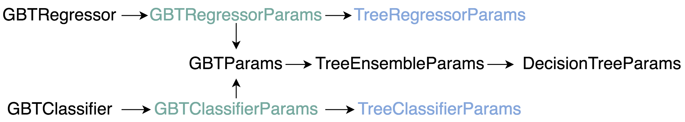
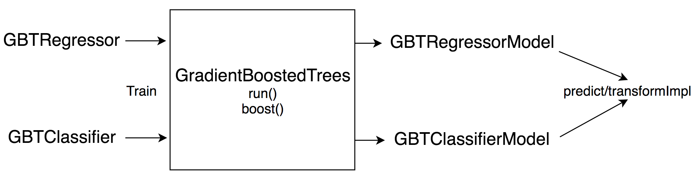

Spark.ML中的GBT分类/回归算法的总结。分类和回归任务的区别在于损失函数和基学习器(决策树)不纯度计算准则不同，分类问题被当作label为-1/+1的回归问题处理。分类问题不能得到预测概率，只能得到预测label，原始预测结果通过和阈值0比较得到预测label。
GBT参数
GBTRegressor和GBTClassifier分别继承了GBTxxxParams参数，该参数又继承了多个参数。所以最终GBT的参数如下图所示。

GBTxxxParams
分类和回归任务分别设置了lossTypeTreexxxParams
分类和回归分别设置了基学习器的impurityGBTParams
设置maxIter和stepSizeTreeEnsembleParams
设置subsamplingRate
GBT过程

- 两个方法都是调用
GradientBoostedTrees.run方法训练，得到对应的预测模型。 - 分类问题会在该方法中通过将label转换成-1/+1，将分类问题当作回归问题进行。
GradientBoostedTrees并非最底层的实现，再往下的实现日后学习。